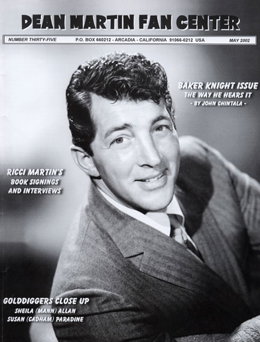

By John Chintala
|
Although Dean Martin fans might not instantly recognize the name "Baker Knight," they certainly know the songs he's written. Such Dino hits as "Somewhere There's A Someone" and "Not Enough Indians" as well as the classic ballads "That Old Time Feelin" and "If You Ever Get Around To Loving Me" all came from the pen of Baker Knight. He was born Thomas Baker Knight, Jr. in Birmingham, Alabama on the Fourth of July in 1933. After graduating high school, Baker served 3 years in the Air Force where he learned to play the guitar. Following his stint in the service, Baker attended the University of Alabama as well as an art school in Birmingham, and became a technical illustrator and draftsman. But when Elvis Presley took the music industry by storm in 1956, Baker dusted off his guitar, formed a rock band with several musician friends, and "Baker Knight and the Knightmares" was born. Their most popular single, "Bring My Cadillac Back," was written by Baker and sold a reported 40,000 copies in two weeks. However, executives felt it was a free commercial for Caddys so it was taken off the air. Subsequent releases didn't fare any better, and Baker soon found himself back to square one. After relocating to Los Angeles for a movie role that never materialized, Baker admits he had less than a dollar to his name when "destiny" arrived in the form of a teenage idol. A mutual friend introduced Baker to Ricky Nelson and the rest, as they say, is part of music history. Baker played a few of his songs for Nelson, including the melancholy ballad "Lonesome Town." Less than six months later, in November 1958, it reached Billboard's Top Ten as did its flip side, "I got A Feeling," another Knight tune. In recent years, "Lonesome Town" was featured in a memorable television commercial for a soft drink, heard in several major motion pictures, and recorded by Paul McCartney on his 1999 album "Run Devil Run." Ricky Nelson would go on to record 20 more Baker Knight originals including the top ten hits "Never Be Anyone Else But You" and Sweeter Than You." |
 |
|
On January 11, 1966, Dean Martin cut his classic rendition of Baker's "Somewhere There's A Someone," the first of eleven Knight compositions than Dino would record over the next six years. In 1970, Baker's original rock and roll inspiration, Elvis Presley, released Knight's "The Wonder Of You," which reached the summit of the easy listening chart and also went top ten on Billboard's Hot 100. During the Bicentennial Year, Dave and Sugar had a number three country hit with Baker's "I'm Gonna Love you," and Mickey Gilley's version of Knight's "Don't The Girls All Get Prettier At Closing Time" topped the country charts and won the Academy of Country Music's "Song Of The Year" award. In 1985 Baker contracted infectious mononucleosis for the second time as an adult. It progressed into what is now termed the Chronic Fatigue/Fibromyalgia Syndrome. Although this illness greatly limited Knight's activities, including his ability to record in commercial studios, he had a small facility built in his house and continued writing and recording songs. Last year, Baker released his first-ever solo CD, "The Way I Hear It," which contains twelve songs that he's written during the past decade, plus his own interpretation of "Lonesome Town." Baker sang every vocal part, produced, arranged, and engineered this labor of love that took nearly three years to complete. Among the standout tracks are the ballads, "I Can't Leave You (Even Though You're Gone)," "You're the Only One (That I Still Look For In A Crowd)," and a humorous commentary on so-called "technological advancements" called "The Computer Is Down." These songs (along with his newest CD, "Music is My Woman," and his first all-instrumental CD, "Music for Romantic Dreamers") illustrate that after 40-plus years in the business, Knight still has his gift of melody and talented way with words. Baker Knight's CD is available through his website as well as on Amazon.com. Over the course of his career, Baker has received two "Million Performance Award" certifications from BMI (Broadcast Music Incorporated) for "Lonesome Town," and "Never Be Anyone Else But You," while "The Wonder Of You" recently received certification for two million performances! Knight also has eight BMI "Citation of Achievement" awards to his credit. In addition to his success as a songwriter, Baker Knight's personal life has been blessed with two children. His daughter, Tuesday Lynn Knight, is perhaps best known for her lead role as Kristen Parker in the horror flick "Nightmare On Elm Street 4," while his son, Thomas Baker Knight III, is a doctor of Veterinary medicine and an award-winning taxidermist who resides in Florida. Last August 28th, I had the pleasure of speaking with Baker Knight via telephone from his home in Alabama. He was more than eager to share anecdotes about some of the songs he wrote for Dean Martin as well as personal insights into the man himself. I began by asking him how he started writing songs for Dino. "I was in a Sherman Oaks pool hall one afternoon, and I was kinda bemoaning problems with my marriage not working out. Some of it was because I worked at night. Anyway, I walked out of the pool hall, and there was this beautiful girl riding in a car. And she just craned her neck all the way around to look at me like she just saw an ice cream sundae or something! And I said, 'Good Lord, somewhere there's a someone for everyone; I know it!'" "The Next two songs of yours that Dean recorded were 'One Lonely Boy' and 'Nobody's Baby Again." "I think a lot of the songs I wrote around this time were about my marriage not working out. It just wasn't the most pleasant thing for either one of us; we just weren't cut out for each other. But we have a beautiful daughter and still talk and get along to this day." "Dean recorded 'If I Ever Get Back To Georgia' on the 'Happiness Is Dean Martin' album…" "At the time, he was into country-type stuff and we were trying to come up with something that might be considered in that vein. I think that's why I came up with that one. You know (humorist) George Grizzard wrote a book titled 'If I ever Get Back To Georgia I'm Gonna Nail My Feet To The Ground.' He liked one of my other songs and wrote about it a couple of times in his column, so I think he got the title for his book from that song." "'A Place In The Shade' reminded me a lot of 'Bumming Around.'" "Yeah, that was kinda my idea. I loved the way Dean sang; he really enjoyed singing, you could tell. You know, he didn't really care for people who got up there and tried to make every note clear and perfect. So, I just tried to get into his groove as well as I could." "'That Old Time Feelin' and 'Not Enough Indians' were both on the 'Gentle On My Mind' album." "I think 'Feelin' was the best song of mine that Dean recorded; he liked it, too. I was at the session, and (arranger) Ernie (Freeman) put these horn licks after each line (sings the cliched horn part) and I just thought, 'Oh, man, this is ruining it.' If he could only have put some nice Floyd Cramer-type piano (fills) in there instead of those horns. You know, not to 'ham it up.' I was just cringing, but I couldn't say anything. I really think the song would've had some notoriety if it was done without the horn licks. But, Ernie was a great arranger. That's just my own thoughts on that one. And 'Not Enough Indians' was definitely about my marriage. Dean got a kick out of that song. You could tell when he was singing it. That ('war whoop' at the end of the song) was an original ad lib on Dean's part." "You wrote three tracks
on Dean's 'I Take A Lot Of Pride In What I Am' LP. 'One Cup
Of Happiness (And One Piece Of Mind)' was spelled 'piece' on
the record jacket, but 'peace' on both the 45 and album
labels. Which one is 'correct,' and also was the song based
on any particular event in your life?" "Well it had the double meaning of 'piece' ('peace') when I did it, but I wrote it as 'piece.' I can't remember any specific incident. But as a writer, you've always got to have your antennae up. 'If You Ever Get Around To Loving Me' was one of my favorites; it was a warm song. And on 'The Sneaky Little Side Of Me' I was just trying to work into his personality and write something that he might like. He had done a couple other things kinda like that, you know, 'playing the field.' I thought that there might be a sneaky side of him, who knows? (laughter)" "The final tune of yours that Dean recorded was 'The Right Kind Of Woman.'" "Of all the songs I wrote for him, I thought that was the biggest clunker. The night that was recorded, Dean had agreed to let some people come in to the studio and watch him. There was sort of an audience there; my wife, people from Bowen's office, and people that I knew. And Dean was having a little trouble 'getting' the song. And I'm just sitting over there sweating 'cause I knew that the song wasn't that good. So, Bowen went over and straightened out whatever problem it was that Dean was having with it. He (Bowen) was just about to 'can' it, and I think they didn't because some of the people there had come to cheer me on. I think Bowen was really trying to give me a helping hand. But I still have to 'pull the covers over my head' when I hear that song." "According to the Warner Brothers Archives, Dean also recorded two of your songs at Hollywood Sound that were never released. What can you tell me about 'Do You Think It's Time?'" "Well, I remember the song (sings 'I think it's time we try again…'). Yeah, that was a good one." "How About 'I Can Remember?'" "Oh, that was one of my favorite tunes. I think I submitted those songs for him. But I'm really skeptical about that session information. I think they (the Warner Brothers archives) might've gotten some of the demos that I did for Dean mixed up with his actual recordings." (Author's note: Baker is correct. As the recently released Bear Family box set illustrates…the August 18, 1970 session, long thought to be unreleased Dino tracks are actually Baker's demos for Dean.) "You mentioned that you attended Dean's recording sessions. What were they like?" "Dean was really a pro. It only took him two days to record an album. In the afternoon, Bowen would bring the band in. And the orchestra and background singers would go down every song he was gonna record that night. So they would have it pretty well polished and ready to go before Dean ever walked in. He'd come in about eight at night and park his Aston-Martin in front of the door. He'd do one or two takes and he was out of there! It was a very smart way to record. "Bowen would have to pay for double sessions for everybody, but it worked. Dean never gave more than two or three takes. He'd just lay it right down. It wasn't like most other sessions where you hear the arrangement on the spot and the singer gets used to it and then they all do it together. Since the band was already rehearsed, that was a big plus for everybody. "I remember Bowen would get out there right in the middle of the room and and (slam his foot on the floor for the downbeat and count) 'One! Two! Three!' I used to get a kick out of that. He'd shake that whole damn orchestra up in no time!" "Finally, is there anything else about working with Dean that you'd like to mention?" "He was always very nice to me. I never saw him the slightest bit inebriated. He was always dressed immaculately; like he stepped off a magazine ad or something. And he had these loafer-like shoes, kinda like slippers. They were black velvet with a gold, red, and black crest on them. And I was really impressed with his Aston-Martin; they were way up there cost-wise, even in those days. He was really one hell of a guy." Special thanks to Dean Martin historian and author, John Chintala. Special Thanks to Baker Knight, who's incredible talent continues to brighten our lives everyday! |
For more information on Dean Martin, visit the Dean Martin Fan Center online.